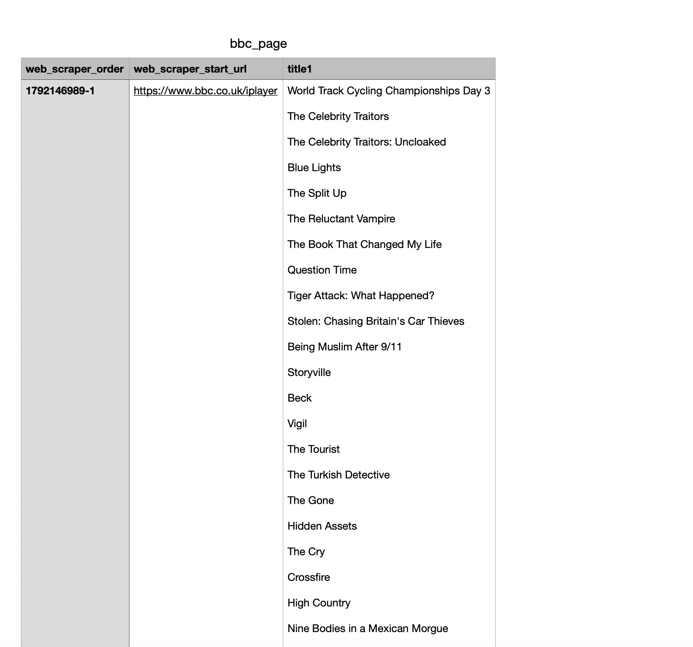
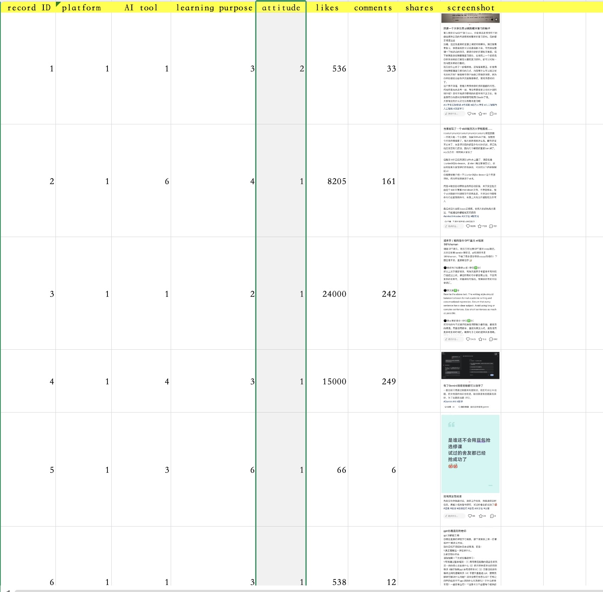
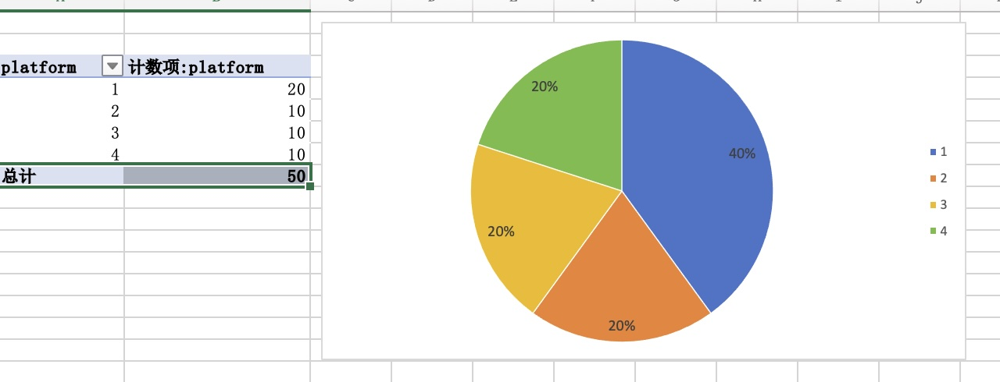
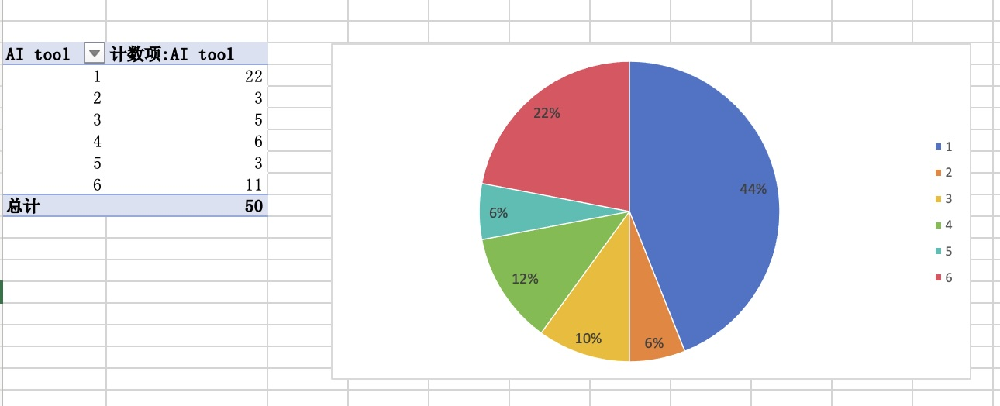
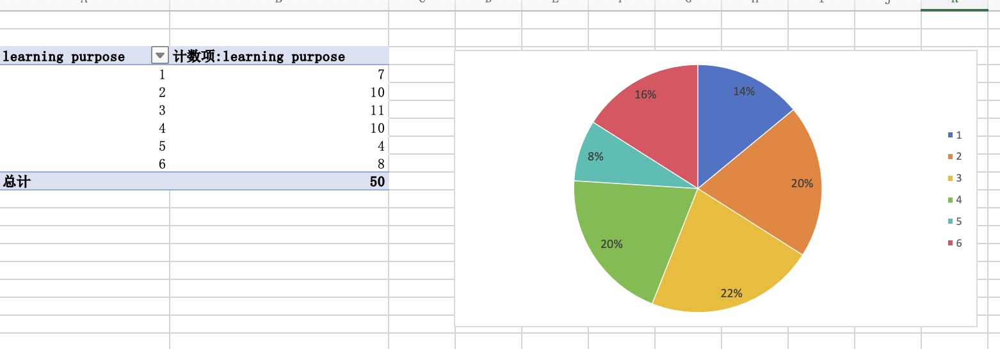
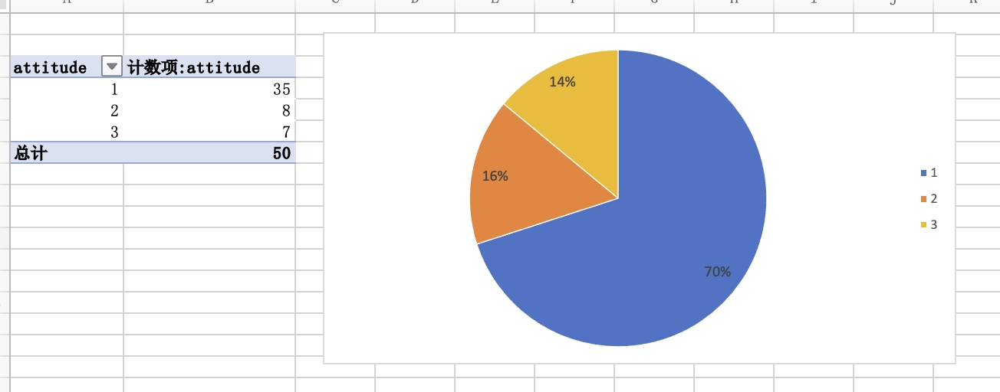
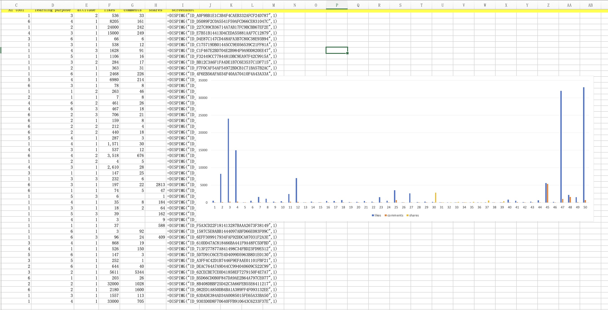
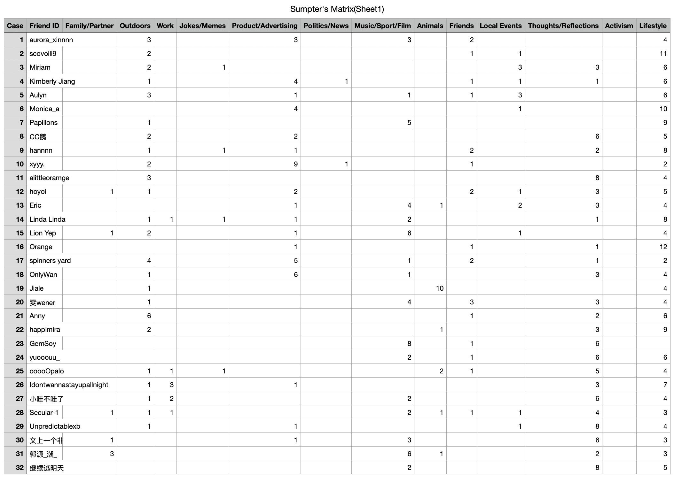

Week 2: Creating Weisite
What I Learnd
This week I learned how to create, design and publish a website.
There are two methods for building websites:
1. Using CampusPress to build a website, which is based on WordPress. I explored how to create
a personal website, and successfully published my first post on the website.
2. Creating a webpage with HTML and CSS, and publishing a website online using GitHub Pages.
I mainly learned the knowledge and skills of HTML and CSS and understood how to use them to
create websites. I also learned how to link HTML and CSS files together.
I found this process very interesting and enjoyable.
This week's workshop helped me develop a basic understanding of website creation and online publishing.
In the next weeks, I would like to improve my HTML and CSS skills, and build a professional online portfolio to
document my learning and showcase my projects throughout the programme.
Week 3: Web Scraping
What I Learned
This week, I learned about web scraping and explored two different methods of collecting data from websites.
The first method was using Web Scraper. I learned how to select specific elements on a webpage and collect useful information, such as titles and other text content. This method helped me understand how web scraping tools work and how they can make data collection more efficient.
The second method was using Python for web scraping. I began to explore how Python can be used to retrieve and extract data from websites through code. Compared with using Web Scraper, Python offers more flexibility and allows users to customise the data collection process according to their needs.
Through these practical methods, I gained a better understanding of how web scraping works and how different tools can be used to collect online data.
Overall, I found this week’s workshop interesting and valuable. Although I still need more practice, I feel that I have taken an important first step towards developing my technical skills. In the future, I would like to improve my Python skills and learn how to clean, organise and analyse the data I collect.
Practical Work
The following images show my learning outcomes from this week.

Week 4: Data and Data Analysis
What I Learned
For this task, our group chose the topic "How Chinese university students use generative AI tools to support their everyday learning." We collected data from four social media platforms to create our dataset.
Through this task, We learned to collect various data and then organized and categorized them. I learned that data collection is not simply about gathering information, but also involves making decisions about what information is important, how it should be classified, and whose perspectives should be represented. I realised that data is not always neutral or objective, as researchers' choices and assumptions can influence the results.
I also developed a better understanding of the ethical responsibilities involved in collecting online data, particularly regarding privacy, consent and potential bias. Another important skill I learned was how to transform qualitative information into quantitative data by creating variables and assigning numerical values.
Overall, this workshop helped me understand the relationship between data, ethics and power. In the future, I will pay more attention to the sources, limitations and potential biases of data rather than simply accepting data as factual or objective.
What did I find challenging about the task?
One of the main challenges was that our search results contained a lot of advertisements and promotional content about AI, such as paid AI courses and online training programmes. These results were not directly relevant to our research question, so we had to spend extra time filtering them out and identifying posts that were genuinely about students’ everyday use of AI for learning.
This made us realise that finding relevant data is not simply about searching for keywords; it also involves making decisions about which information to include and exclude.
Practical Work
The following images represent the dataset we have established.


Week 5: Data Visualisation
What I Learned
This week, we reflected on our learning outcomes from the previous week and learned how to use practical charts to present data. We also developed our skills in using Excel to organise, analyse and visualise data, as well as understanding how to communicate information and key messages to an audience through charts.
Practical Work
The following images show my learning outcomes from this week.





Week 6: Identity, Algorithmic Identity, and Data
What I Learned
This week, we explored the relationship between identity, algorithmic identity and data. We learned how social media platforms collect personal information, browsing history, search queries and online interactions to categorise users and create personalised advertising profiles.
By exploring my advertising profile, I realised that algorithms categorise me into different interest groups based on my online activities. However, these categories are not always accurate because algorithms can only make assumptions based on limited data and cannot fully understand an individual's identity.
When using Sumpter's Matrix to categorise my friends' social media posts， I recorded the content posted by each person along with their corresponding categories, such as friends, lifestyle or work. These data can help us analyze the users' behaviors and interests on social media.
But I found manual scraping time-consuming and subjective. We need to decide how to categorise each post and apply consistent criteria to reduce personal bias.
At the same time, some contents are applicable to multiple categories. Sometimes it is difficult to make a distinction.
So through this experiment, I realized ur digital identities are dynamic and shaped by our online behaviours and algorithmic classifications. Overall, I learned that data can help platforms understand users, but it cannot fully represent who we really are.
Practical Work
The following image shows my learning outcome from this week.
